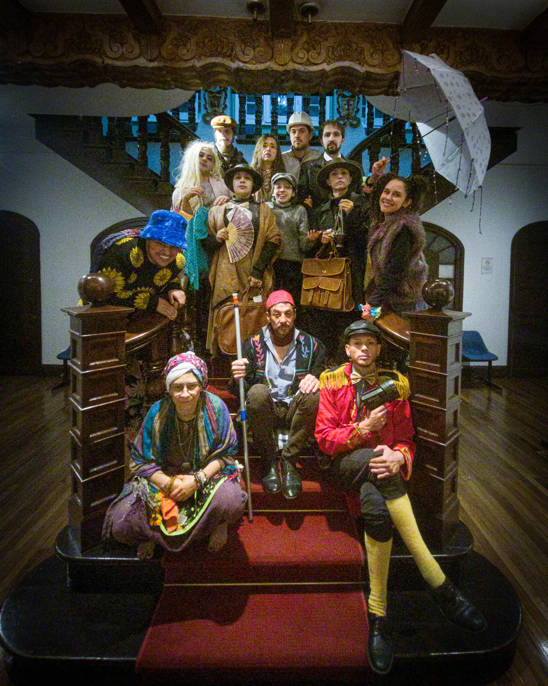
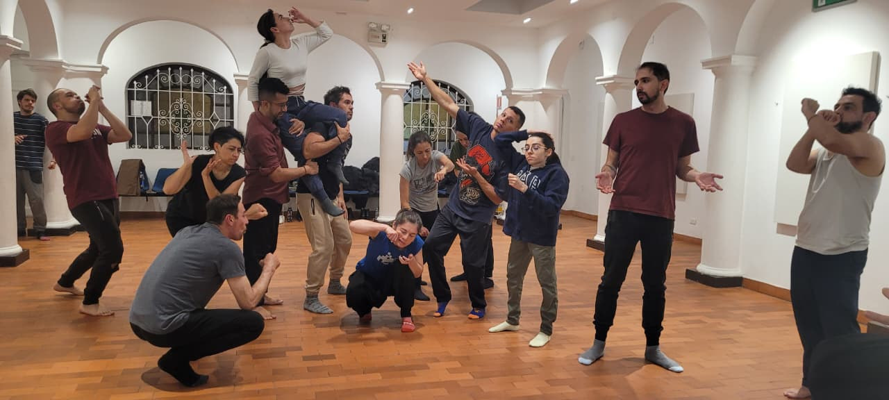
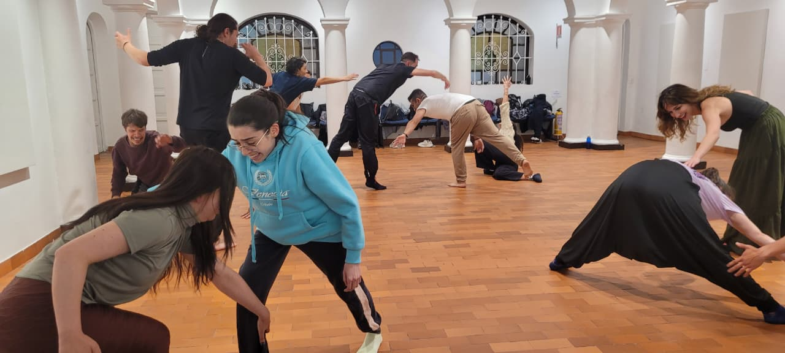
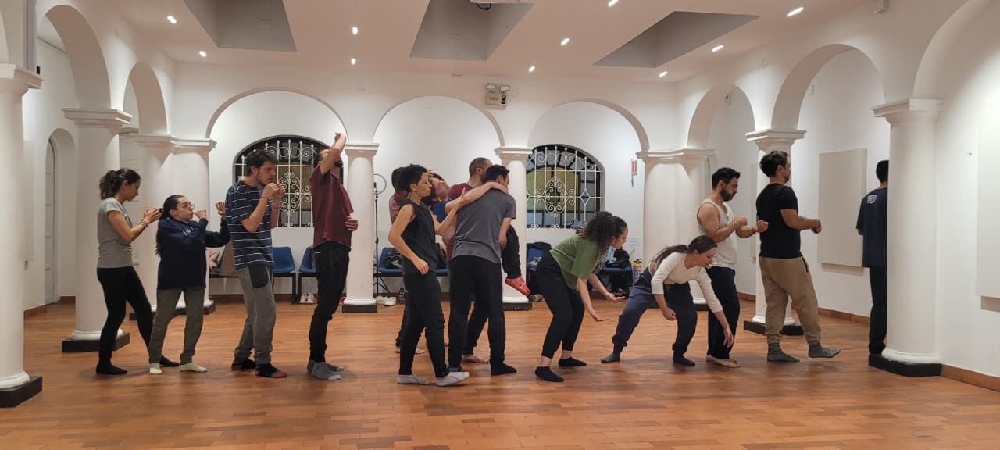
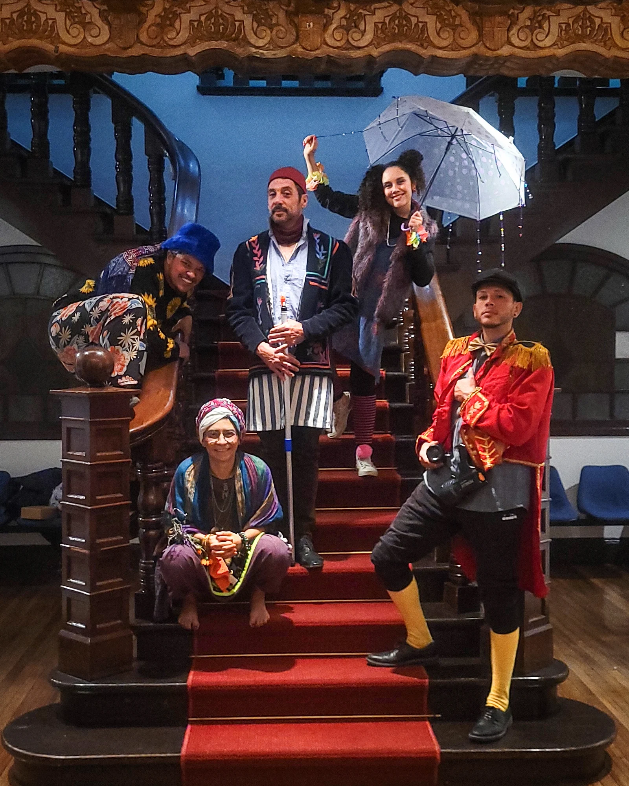
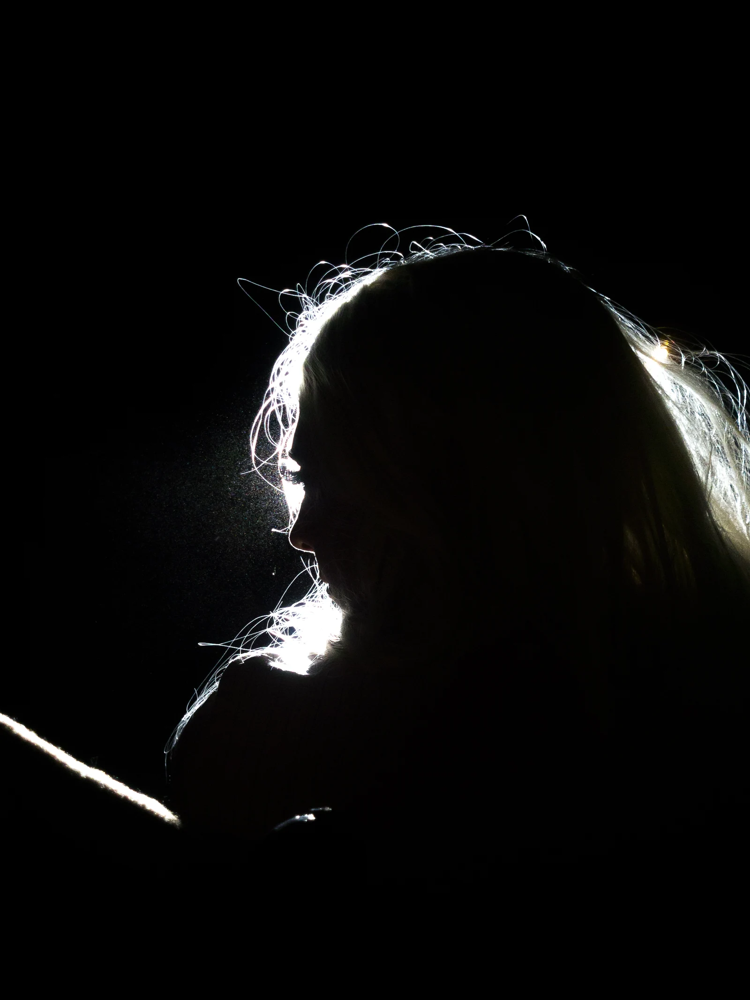
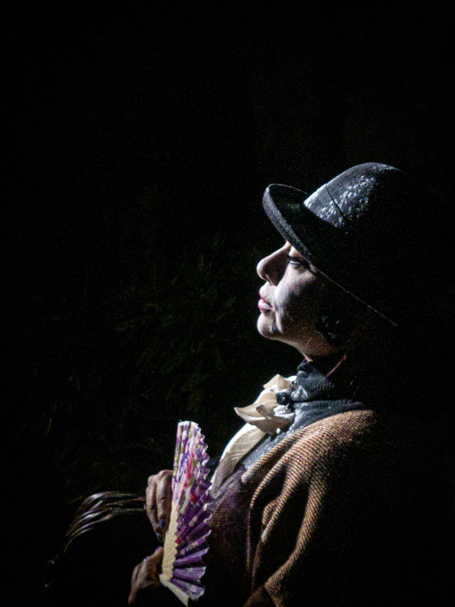
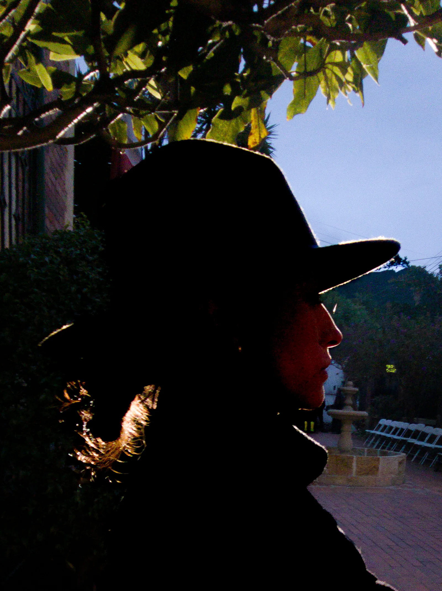
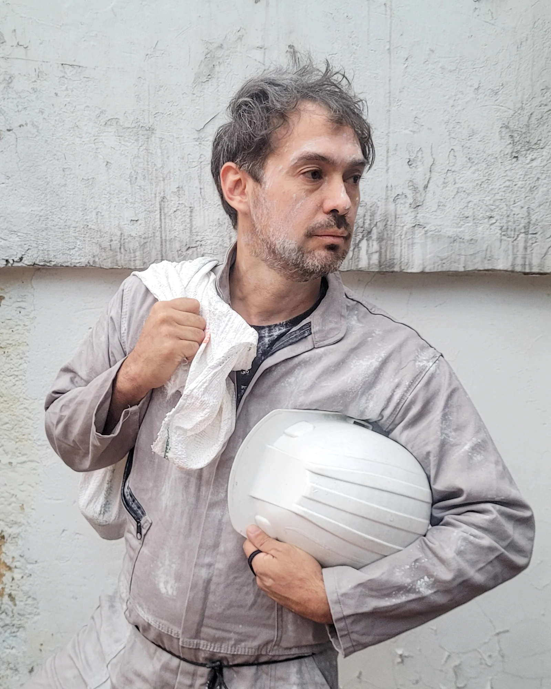
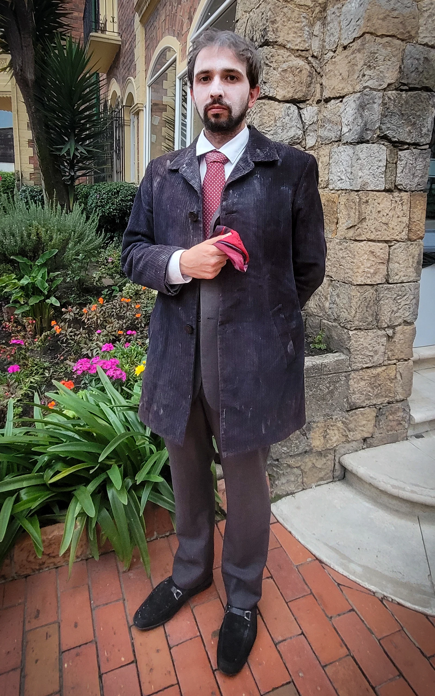

Laboratorio de Teatro Italiano

El idioma se vive
en escena.
Improvisar, jugar, leer, cantar y construir con otras personas. El teatro abre una puerta a la lengua y a la cultura italiana.
¿Quieres participar?
Un laboratorio.
Una historia compartida.
La Gruta y Ponte tra Culture Colombia son compañías aliadas que comparten proyectos de creación, investigación y pedagogía. Su trabajo conjunto surge de una relación de varios años entre sus artistas y de experiencias desarrolladas entre Colombia e Italia.
Ponte tra Culture Colombia, fundada por Gianluca Barbadori y Valentina Blando, desarrolla desde 2016 el Laboratorio Permanente de Teatro en Italiano junto al Istituto Italiano di Cultura de Bogotá. Con la creación de La Gruta por Valentina Blando y Daniel Francisco Villamizar, esta colaboración se amplía a nuevos proyectos, procesos de investigación, producción y circulación.
Hoy ambas compañías trabajan conjuntamente como La Gruta / Ponte tra Culture, compartiendo artistas, metodologías y proyectos.
Conocer Ponte tra CultureArchivo de Ponte tra Culture ColombiaUn lugar
para empezar.
No necesitas experiencia teatral ni haber estudiado italiano. El laboratorio reúne distintos niveles de lengua en un proceso de formación y creación.
El ensayo también
es una forma de hablar.








